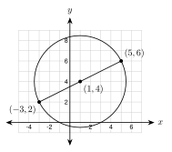
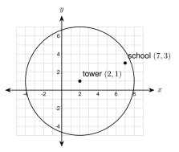
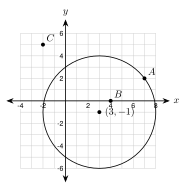
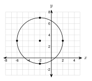

7.5 The Equation of a Circle
- Write the equation of a circle from its center and radius, from its center and a point, and from the ends of a diameter
- Read the center and radius from an equation and graph the circle
- Change an equation to standard form by completing the square
- Tell if a point is on, inside, or outside a circle
Warm-Up
1. √(9 + 16) = 5
2. (2, 1)
3. (x + 4)2
7.5.1Where the Equation Comes From
- Every point (x, y) on a circle is the same distance r from the center (h, k).
- Distance formula: √(x − h)2 + (y − k)2 = r
- Square both sides.

Equation: (x − 2)2 + (y − 1)2 = 36
Check: (2 − 2)2 + (7 − 1)2 = 0 + 36 = 36
(x + 1)2 + (y − 3)2 = 16
7.5.2Read and Graph
- The equation has x − h. A plus sign inside means the center coordinate is negative.
- The number on the right is r2. Take the square root to get r.
| Equation | Center | Radius |
|---|---|---|
| (x − 4)2 + (y − 3)2 = 25 | (4, 3) | 5 |
| (x + 4)2 + (y + 3)2 = 25 | (−4, −3) | 5 |
a. (x − 4)2 + (y + 2)2 = 25 center (4, −2), r = 5
b. (x + 6)2 + (y − 1)2 = 18
center (−6, 1), r = √18 = 3√2 ≈ 4.24

Center: (2, −1)
Radius: 3
Plot 4 points 3 units from the center: (5, −1), (−1, −1), (2, 2), (2, −4)
Draw the circle.
a. (x + 3)2 + (y − 2)2 = 16 center (−3, 2), r = 4
b. x2 + y2 = 36 center (0, 0), r = 6
7.5.3Write the Equation
(x + 2)2 + (y − 5)2 = 9
Find r2 with the distance formula (no square root needed):
r2 = (4 − 1)2 + (2 − (−2))2 = 9 + 16 = 25
Equation: (x − 1)2 + (y + 2)2 = 25

Center = midpoint:
(−3 + 52, 2 + 62) = (1, 4)
r2 = distance from the center to (5, 6), squared:
(5 − 1)2 + (6 − 4)2 = 16 + 4 = 20
Equation: (x − 1)2 + (y − 4)2 = 20
a. Center (4, −1) and radius 7.
(x − 4)2 + (y + 1)2 = 49
b. Center (−3, 0), passing through (1, 6).
r2 = 42 + 62 = 52. (x + 3)2 + y2 = 52
c. A diameter with endpoints (−2, −1) and (6, 5).
Center (2, 2). r2 = 42 + 32 = 25. (x − 2)2 + (y − 2)2 = 25
7.5.4Completing the Square
- To complete x2 + bx, add b2 squared.
- Add the same numbers to both sides.
1. Group, and move the number: (x2 − 6x) + (y2 + 4y) = 12
2. Half of −6 is −3, squared is 9. Half of 4 is 2, squared is 4.
(x2 − 6x + 9) + (y2 + 4y + 4) = 12 + 9 + 4
3. Factor: (x − 3)2 + (y + 2)2 = 25
Center: (3, −2) Radius: 5
(x2 + 8x + 16) + (y2 − 10y + 25) = −5 + 16 + 25
(x + 4)2 + (y − 5)2 = 36. Center (−4, 5), radius 6.
a. x2 + y2 + 4x − 2y − 4 = 0
(x + 2)2 + (y − 1)2 = 4 + 4 + 1 = 9. Center (−2, 1), radius 3.
b. x2 + y2 + 6x + 10y + 18 = 0
(x + 3)2 + (y + 5)2 = −18 + 9 + 25 = 16. Center (−3, −5), radius 4.
(x + 2)2 + (y − 3)2 = −20 + 4 + 9 = −7. A square cannot add to a negative number, so it is not a circle.
7.5.5On, Inside, or Outside?
- Equal to r2: the point is on the circle.
- Less than r2: the point is inside.
- Greater than r2: the point is outside.

(7 − 2)2 + (3 − 1)2 = 25 + 4 = 29
29 is less than 36, so the school is inside. Does it reach? Yes

A(7, 2): 42 + 32 = 25, on
B(4, 0): 12 + 12 = 2, inside
C(−2, 5): (−5)2 + 62 = 61, outside
Equation: (x + 4)2 + (y − 3)2 = 100
(4, 6): 64 + 9 = 73 < 100, inside, feels it. (2, −5): 36 + 64 = 100, on the edge. (6, −9): 100 + 144 = 244 > 100, outside, does not feel it.
(2, 6): 9 + 16 = 25, on. (−3, 5): 4 + 9 = 13 < 25, inside. (4, −2): 25 + 16 = 41 > 25, outside.
1. The equation of a circle comes from the distance formula. The center is (h, k).
2. The number on the right is r2.
3. The center of a diameter is its midpoint.
4. When completing the square, add to both sides.
5. If (x − h)2 + (y − k)2 is greater than r2, the point is outside.
Practice
Read the Center and Radius
1. (x − 5)2 + (y − 2)2 = 49 (5, 2), r = 7
2. (x + 4)2 + (y + 1)2 = 36 (−4, −1), r = 6
3. x2 + (y − 7)2 = 25 (0, 7), r = 5
4. (x − 3)2 + y2 = 81 (3, 0), r = 9
5. (x + 2)2 + (y − 6)2 = 20. Give the radius as a square root and as a decimal to the nearest hundredth. (−2, 6), r = √20 ≈ 4.47
Write the Equation
6. Center (2, −3), radius 5.
(x − 2)2 + (y + 3)2 = 25
7. Center (0, 0), radius 9.
x2 + y2 = 81
8. Center (−6, 4), radius 2.5.
(x + 6)2 + (y − 4)2 = 6.25

9. Use the graph. The center and the four marked points are on grid points.
Center (−2, 3), radius 4. (x + 2)2 + (y − 3)2 = 16
10. Center (3, −4), passing through (9, 4).
r2 = 62 + 82 = 100. (x − 3)2 + (y + 4)2 = 100
11. Center (−1, −2), passing through (2, 3).
r2 = 32 + 52 = 34. (x + 1)2 + (y + 2)2 = 34
12. A diameter has endpoints (2, 3) and (8, 11).
Center (5, 7). r2 = 32 + 42 = 25. (x − 5)2 + (y − 7)2 = 25
13. A diameter has endpoints (−7, 2) and (3, 8).
Center (−2, 5). r2 = 52 + 32 = 34. (x + 2)2 + (y − 5)2 = 34
Complete the Square
14. x2 + y2 − 8x + 6y + 9 = 0
(x − 4)2 + (y + 3)2 = −9 + 16 + 9 = 16. Center (4, −3), radius 4.
15. x2 + y2 + 12x − 4y + 31 = 0
(x + 6)2 + (y − 2)2 = −31 + 36 + 4 = 9. Center (−6, 2), radius 3.
16. x2 + y2 − 2x + 14y + 14 = 0
(x − 1)2 + (y + 7)2 = −14 + 1 + 49 = 36. Center (1, −7), radius 6.
17. x2 + y2 + 6x − 8y + 30 = 0. Is this a circle? Explain.
(x + 3)2 + (y − 4)2 = −30 + 9 + 16 = −5. Not a circle, because the right side is negative.
On, Inside, or Outside?
18. The circle is (x − 1)2 + (y + 3)2 = 49. Test each point.
a. (8, −3) 49 + 0 = 49, on
b. (4, 1) 9 + 16 = 25, inside
c. (−5, −9) 36 + 36 = 72, outside
Real Problems
19. A cell tower is at (4, −2) and reaches 8 miles. Write the equation of the edge of the signal. Does it reach the school at (10, 4)? Does it reach the hospital at (8, 2)?
(x − 4)2 + (y + 2)2 = 64. School: 36 + 36 = 72 > 64, no. Hospital: 16 + 16 = 32 < 64, yes.
20. A sprinkler at (6, 5) on a yard plan waters a circle with radius 7 feet. Write the equation. Is the flower bed at (10, 10) watered?
(x − 6)2 + (y − 5)2 = 49. (10, 10): 16 + 25 = 41 < 49, yes.
21. An earthquake is felt up to 15 miles from the epicenter at (−3, −4). Write the equation. Is a city at (9, 5) inside, on, or outside the circle?
(x + 3)2 + (y + 4)2 = 225. (9, 5): 144 + 81 = 225, on the circle.
Find the Mistake
22. Jamal says: "The circle (x − 3)2 + (y + 5)2 = 16 has center (−3, 5) and radius 16." Find his two mistakes.
The signs are reversed: the center is (3, −5). The 16 is r2, so the radius is 4.
Test Practice
A. (x − 2)2 + (y + 5)2 = 9
B. (x + 2)2 + (y − 5)2 = 9 ← correct
C. (x + 2)2 + (y − 5)2 = 3
D. (x − 2)2 + (y + 5)2 = 3
A. (5, 5) ← correct
B. (6, 7)
C. (3, −1)
D. (2, 7)
Challenge
r = 4. (x − 3)2 + (y − 4)2 = 16
(x − 2)2 + 1 = 25, so (x − 2)2 = 24 and x = 2 ± √24. The points are about (−2.90, 0) and (6.90, 0).